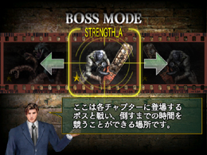
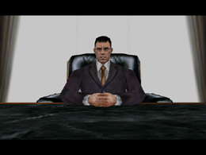

最終章 涙 NEW!
HOD2クリアへの道！
…気がつけば、世間はもうすっかり春。
「お花見、楽しかったね～」
「今度のGW、どうするの～？」
ぽかぽか陽気に誘われて、ついついお出かけの話題もはずみます。
しかし！
そんな世間のフワフワした雰囲気を吹き飛ばすかのように、
ワタクシとO君は、相変わらずゾンビたちと戦い続けていたのでした。
連日のチャレンジで頬がこけたO君は、まるでゾンビのよう。
「むぅ…。
こ、こうなったら…、アレに頼るしかない…」
名づけて、
『O君ゾンビ化計画』！
毎日朝の6時から、
HOD２をクリアできるまで特訓します！
…ていうのは、冗談ですが。
やはり週末をはさむと腕が落ちてしまうので、月曜から金曜までの
5日間、強化訓練をすることにしました。
これできっと、O君もHOD2をクリアできるハズ…！
【1】まずはボスモードで練習
ゲーム前半は上手く進めるようになったO君にとって、１番の難関は
終盤に待ち受けているボス達でした。
特に、いつも手こずってしまうのが
・チェーンソーを振り回す「STRENGTH」
・HOD1にも登場した、強敵「MAGICIAN」
の2体。
「あと1歩でラストステージ！」というところまでたどり着いても、
ボスにやられてしまっては、それまでの努力が水の泡です。
かといって、また最初からチャレンジしていては、時間がいくら
あっても足りないし…。
そこで役に立つのが『ボスモード』！
たどりつくまでに時間がかかる、終盤のボスたちを何度も
練習することができます。
手こずるボスは、攻撃パターンとタイミングをしっかり把握してから
最終決戦に臨みましょう！

クリアできるまで、何度も練習！
【2】最終奥義！ヌンチャクマシンガン
みなさんご存知の通り、HOD 2&3 RETURNはWiiザッパーでも
遊ぶことができます。
実はその他にも、とある遊び方が隠されているのです！
それは…
片手にWiiリモコン、片手にヌンチャクを持った
『ヌンチャク・スタイル』！
このスタイルで遊ぶと、なんと驚異的な連射が可能になるのです！
（ああ、言っちゃった…！）
みなさん試しにヌンチャクを接続して、BボタンとZボタンを交互に
すばやく押してみてください。きっとその連射速度に驚くはずです。
「マシンガンかよ！これ！ずりーよー」
…という声が聞こえてきそうですが、あえて無視。
これは慣れない人を救済するための奥義なので、
うまい人はこれを使わずにクリアしてくださいね。
では早速、O君に試してもらいましょう！
「さあ、O君、この最終奥義でゾンビたちを倒すのだ！」
「…はぁ。
…
…
なんか、これスゴイっすね。
でも、いらないっす。Wiiリモコンだけでいいっすよ！」（あっさり）
え、えぇぇぇぇ…？
奥義に向かって「いらない」とか言っちゃう展開ってありえるの？
（クリアできなくても知らないからねー！）
ええと、コホン。
O君の言うとおり、確かにこの技は強力すぎます。
弾が早く消費されてしまう分、頻繁にリロードしなければ
すぐに弾切れになってしまうのです。リロードタイミングを意識しないと、
あっという間にダメージを受けることに。
ヌンチャク・スタイルで遊ぶ時は、リロードタイミングに注意しましょう！
さあ、ワタクシに伝えられることは、もはやここまで…。
O君は目的を達成できたのでしょうか…？
本日の結果はというと…、

ゴールドマンの野望を打ち砕き…
ま、まさかの
HOD2クリアー！！！！
O君、すごーーーい！！
ついに、ついにやりました！！！！
「HOD2を遊んだのは10年前に1度きり」という超初心者のO君が
とうとうエンディングまで到達しました！
リロードは下だっていってるのに、上でやったり、
調子に乗って分岐して、知らない街の人を平気で撃ったり、
ブログの内容を無視してリロードのテンポをアレンジしたりとか、
最終奥義だっていっているのに、無視したりとか
イッパイあったけど…
ク、クリアできるんですね。ぐすん。
よかった。
ゴールデンウィークがみえてきたよー。
これで、
『超初心者でも、コツさえつかめばHOD2をクリアできる』
ということが実証されました（たぶん）！
ああ、O君、達成感のあまり、まるで宇宙（ソラ）を眺めているかのような
遠い目になっちゃっています。その瞳にはうっすら涙が…。
これでめでたく、HOD2クリアへの道は、最終回となります。
この攻略法を参考にして、HOD2をクリアできる方が1人でも増えれば
ワタクシ、心から幸いに思います。
最後まで読んでいただき本当にありがとうございました！
それではみなさん、「ザ ハウス オブ ザ デッド 2&3リターン」を
これからも末永くどうぞよろしくお願いします！
～おわり～
 RSS
RSS